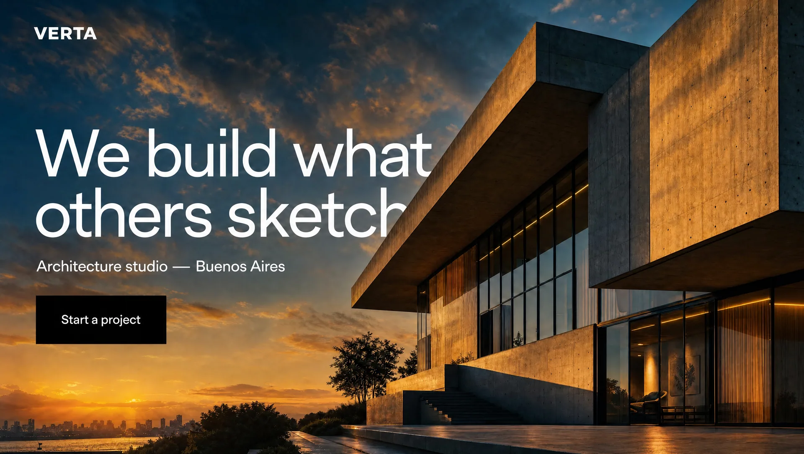
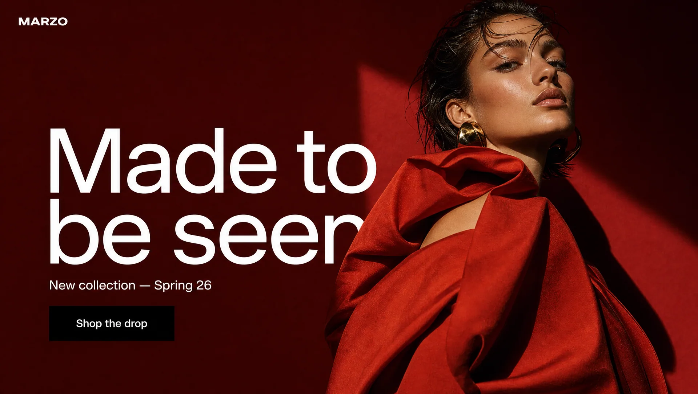
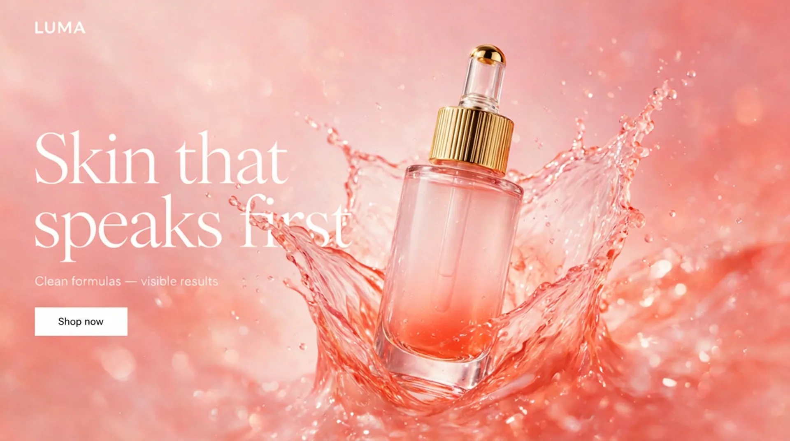
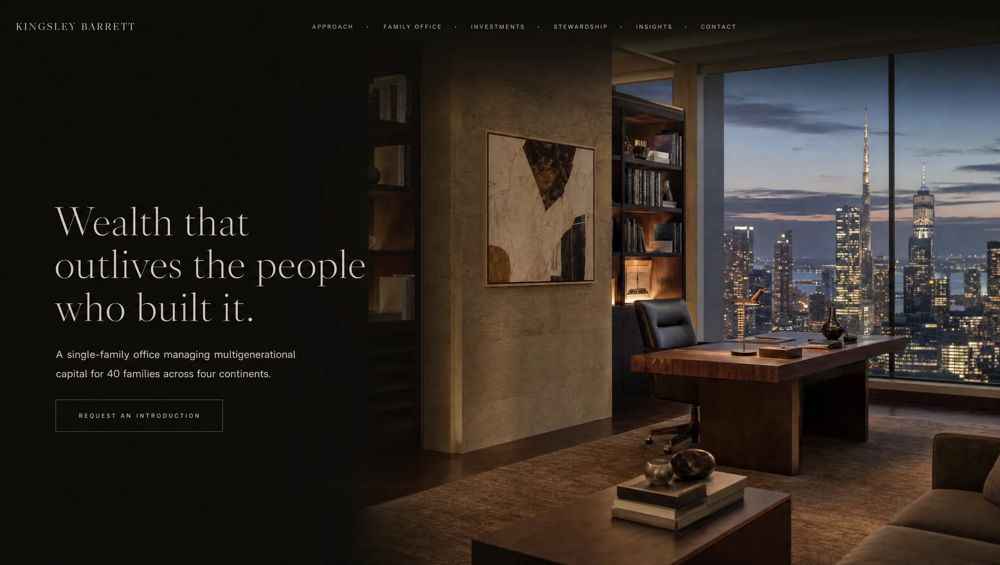
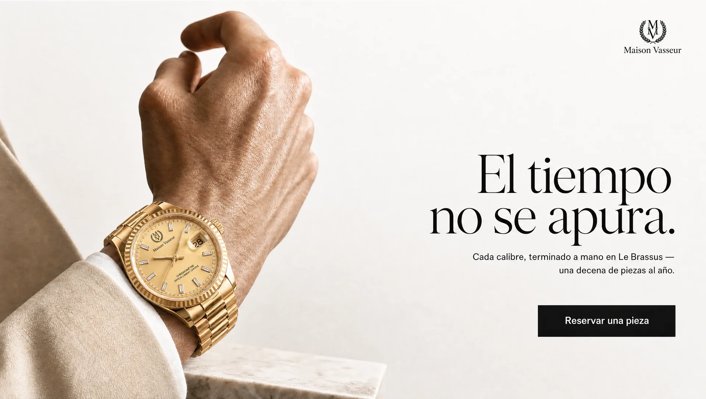
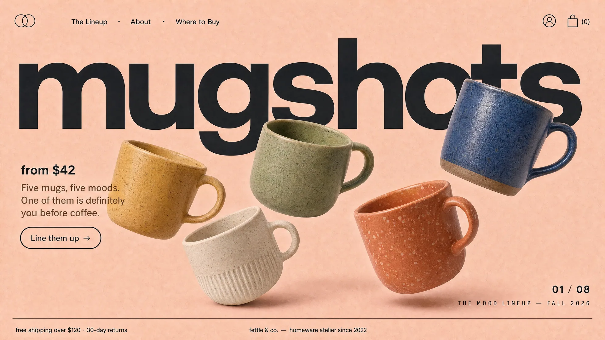
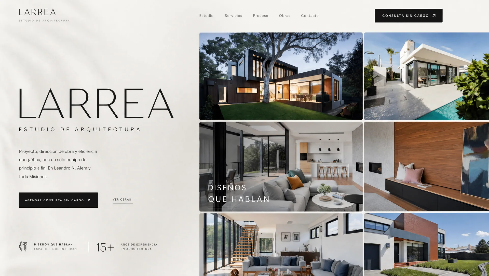
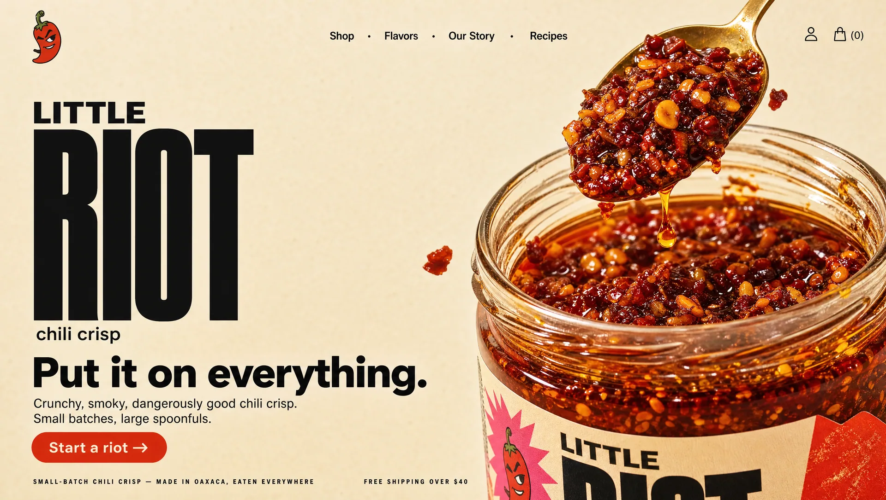

Soluciones visuales que construyen marcas líderes
Donde el diseño se encuentra con la tecnología.
Diseñamos páginas web, marcas y productos digitales. Construimos sistemas personalizados para hacerlos funcionar.
Eleva y unifica la experiencia en cada superficie donde vive tu marca.
Formulamos un informe en base a un estudio preliminar de tu negocio y tu competencia, métricas de éxito, oportunidades de mejora y qué es lo que te diferencia. Una vez aprobado continuamos con la siguiente fase.
Construimos un diseño navegable de las páginas principales, con la estructura e identidad visual definidas: colores, tipografía, imágenes y las animaciones que le dan vida. Cuando lo aprobás, ya sabés exactamente cómo va a verse el sitio.
Desarrollamos el sitio y los sistemas definidos en el informe, integrándolos con las herramientas que ya utilizás. Configuramos las conexiones, automatizaciones e integraciones necesarias para que todo funcione en conjunto, sin que tengas que cambiar la forma en que trabajás.
Pedí tu diagnóstico gratis







Antes de construir, entendemos qué necesita tu negocio.
El diagnóstico es gratuito y llega con una propuesta concreta: qué recomendamos mejorar, qué podemos construir y cuánto cuesta. Nos encargamos de asesorarte para que tomes la mejor decisión.
Analizamos tu negocio y tu competencia para detectar oportunidades y definir qué vale la pena construir. Recibís el diagnóstico, los entregables y sus precios en menos de 24 horas.
→Esta web es una muestra de cómo trabajamos: diseño, desarrollo y tecnología pensados como una sola pieza. El mismo criterio que aplicamos a nuestro sitio lo llevamos al de cada cliente.
→